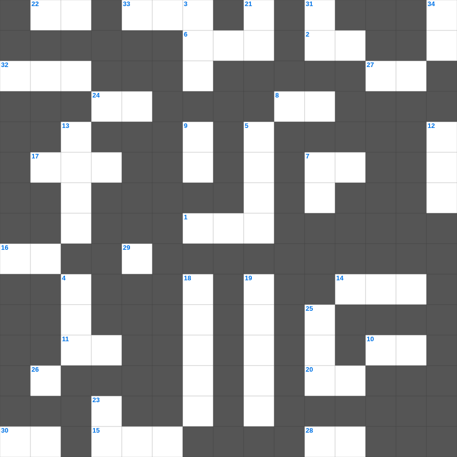

말라기: 십일조와 축복
📌 서비스 정의
십자가로세로는 교회 주보와 주일학교에서 사용할 수 있는 성경 기반 가로세로 퍼즐 서비스입니다. 성경 인물, 사건, 핵심 구절을 바탕으로 제작되었습니다. 온라인 풀이 및 인쇄 기능을 제공합니다.
📖 말라기란?
말라기는 구약의 마지막 예언서로, 형식적인 신앙과 불성실한 헌신을 질타하며 메시아의 길을 예비할 엘리야 같은 선지자가 올 것을 예언합니다.
📚 말라기의 주요 사건·주제
하나님의 사랑에 대한 의심 제기 · 제사장들의 부패 질타 · 십일조에 대한 권고 · 여호와의 날에 대한 경고 · 엘리야의 도래 예언
말라기를 주제로 한 말라기 성경 퀴즈 문제입니다. 35개의 단어를 맞춰보세요! 가로세로 낱말 퍼즐 형식으로 말라기의 핵심 내용을 재미있게 복습할 수 있습니다.

📝 가로 힌트
1. 예수님이 십자가에 못 박히신 곳
2. 예수님이 우리 죄를 대신해 돌아가심
6. 최후의 만찬에서 떡과 포도주를 나누심
7. 야곱이 사다리 환상을 본 곳
8. 고라 자손의 반역 때 땅이 갈라짐
10. 제물을 통째로 태워 드리는 제사
11. 여호와 이것: 치료하시는 하나님
14. 구원의 투구와 의의 이것
15. 유월절에 문설주에 바른 것
16. 하나님이 값없이 주시는 선물
17. 대제사장의 흉패에 박힌 보석 개수
20. 여호와 이것: 준비하시는 하나님
22. 새 예루살렘 성의 열두 문 재질
24. 반석 위에 지은 집과 이것 위에 지은 집
27. 잘못을 뉘우치고 하나님께 돌아오는 것
28. 세례를 주는 물의 영적 의미
29. 네 이웃의 집을 이것내지 말라
30. 믿음은 들음에서 나며 들음은 그리스도의 이것으로 말미암았느니라
32. 광야 생활을 기억하며 텐트를 치는 절기
33. 알곡과 이것의 비유
📝 세로 힌트
3. 언약궤를 모셔두는 가장 거룩한 장소
4. 삼손의 힘의 비밀을 알아낸 여인
5. 예수님을 은 30에 판 제자
7. 야곱의 사다리 환상 장소
9. 베드로가 감옥에서 천사의 도움으로 나옴
12. 이 기적을 베푸신 분
13. 성경 인물 중 가장 장수한 사람은?
18. 나아만 장군이 요단강에 일곱 번 씻음
19. 여호수아가 성을 돌자 무너진 사건
21. 일곱째 날에 하나님이 하신 일
23. 여호수아가 기도할 때 멈춘 것
25. 모세가 물을 낼 때 사용한 도구
26. 넷째 날 만드신 밤의 주관자
31. 성소 안에 있는 일곱 줄기의 등불
34. 모든 것 위에 믿음의 이것을 가지고
🧩 이 퍼즐에서 배우는 내용
이 퍼즐은 말라기: 십일조와 축복의 핵심 단어와 개념을 자연스럽게 복습할 수 있도록 구성되었습니다. 주일학교 수업이나 개인 성경공부에서 학습 내용을 점검하는 용도로 바로 활용할 수 있습니다.
🧑🏫 교회 교육 자료 활용
이 퍼즐은 주일학교 교재 추천 자료로 활용할 수 있고, 주일학교 주보에 넣기 좋은 분량으로 구성되어 있습니다. 수업용 주일학교 교안에 활동지로 붙이거나, 예배 후 복습용 주일학교 공과교재로 바로 사용할 수 있습니다.
🏷️ 키워드
말라기 성경 퀴즈 문제, 말라기, 십자가로세로, 성경퀴즈, 말씀퀴즈, 가로세로퍼즐, 주일학교 교재 추천, 주일학교 주보, 주일학교 교안, 주일학교 공과교재